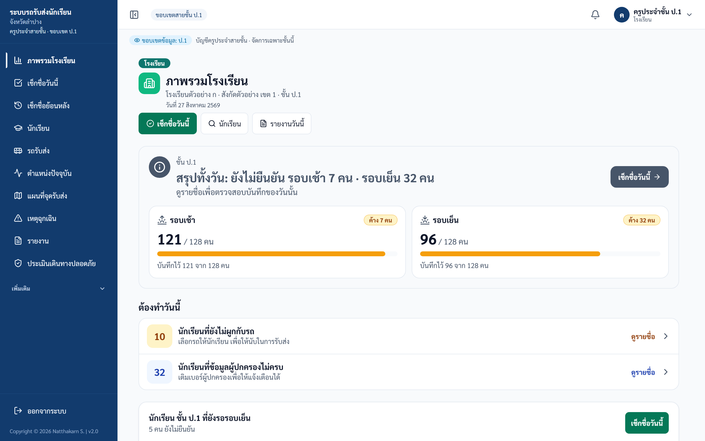

คู่มือครูประจำสายชั้น: เช็กชื่อขึ้น-ลงรถ
เว็บไซต์ schoolbuslampang.com · ปรับปรุง 7 พ.ย. 2569 · ภาพในคู่มือเป็นข้อมูลตัวอย่าง ไม่ใช่ข้อมูลจริง
คู่มือนี้สำหรับใคร และทำอะไรได้บ้าง
- สำหรับครูที่ได้รับบัญชีครูประจำสายชั้นจากโรงเรียน
- คุณเห็นและทำงานได้เฉพาะชั้นที่รับผิดชอบ
- เช็กชื่อรายห้องทุกวัน: รอบเช้า บันทึกว่าเด็กถึงโรงเรียน · รอบเย็น บันทึกว่าเด็กขึ้นรถกลับบ้าน
- บันทึกเด็กที่ มาเอง/กลับเอง (ไม่ได้ใช้รถรอบนั้น) และเด็กที่ ลา ของวันนี้ได้เอง
- บันทึกเช็กชื่อที่ตกหล่นย้อนหลังได้ไม่เกิน 7 วัน (เมนู เช็กชื่อย้อนหลัง)
- เพิ่มและแก้ข้อมูลนักเรียนในชั้นของคุณ เลือกรถหรือเปลี่ยนรถให้เด็ก และกู้คืนรายชื่อที่ลบไปแล้ว
- แก้ข้อมูลรถที่เด็กในชั้นคุณใช้ได้บางส่วน (ประเภทรถ เจ้าของรถ ประกัน) ข้อมูลรถใช้ร่วมกันทุกชั้นและทุกโรงเรียน แก้เมื่อแน่ใจเท่านั้น
- เช็กชื่อของวันนี้ไม่ต้องพิมพ์เหตุผล ระบบจำเองว่าใครกด และกดเวลาไหน
เริ่มต้นใช้งาน
ขอบัญชี
ขอบัญชีจากผู้ดูแลบัญชีของโรงเรียน (เจ้าหน้าที่ที่ใช้บัญชีโรงเรียนหลัก) เขาจะให้ชื่อผู้ใช้และรหัสผ่านเริ่มต้นกับคุณ
เข้าสู่ระบบ
- เปิด schoolbuslampang.com บนมือถือ
- พิมพ์ชื่อผู้ใช้ในช่อง ชื่อผู้ใช้หรือทะเบียนรถ
- พิมพ์รหัสผ่าน
- กด เข้าสู่ระบบ
ครั้งแรก ระบบจะขึ้นว่า กรุณาเปลี่ยนรหัสผ่านเริ่มต้น
- พิมพ์ รหัสผ่านปัจจุบัน (รหัสที่ได้รับ)
- พิมพ์ รหัสผ่านใหม่ อย่างน้อย 8 ตัวอักษร และไม่เดาง่าย
- พิมพ์รหัสใหม่อีกครั้งในช่อง ยืนยันรหัสผ่านใหม่
- กด เปลี่ยนรหัสผ่าน
ลืมรหัสผ่าน
แจ้งผู้ดูแลบัญชีของโรงเรียน ให้ตั้งรหัสใหม่ให้ (เมนู เพิ่มเติม › บัญชีครูประจำสายชั้น › รีเซ็ตรหัส)
เมนูอยู่ตรงไหน
- มือถือ: แถบด้านล่าง 4 ปุ่ม หน้าแรก · นักเรียน · เช็กชื่อ · รายงาน เมนูอื่นกดปุ่ม ☰ มุมซ้ายบน
- คอมพิวเตอร์: เมนูด้านซ้าย ภาพรวมโรงเรียน · เช็กชื่อวันนี้ · เช็กชื่อย้อนหลัง · นักเรียน · รถรับส่ง · เหตุฉุกเฉิน · รายงาน เมนูที่ใช้นาน ๆ ครั้งพับไว้ใต้ เพิ่มเติม
- ถ้ากด รายงาน บนมือถือแล้วแถบด้านล่างหายไป ให้กด ☰ แล้วเลือก เช็กชื่อวันนี้ เพื่อกลับ
💡 เคล็ดลับ: บันทึกหน้าเว็บไว้ที่หน้าจอหลักของมือถือ จะเปิดได้เร็วเหมือนแอป
งานประจำวัน: เช็กชื่อรายห้อง (ทำตามลำดับ)
- เปิดหน้า เช็กชื่อวันนี้ (หัวหน้าจอเขียนว่า เช็กชื่อรายห้อง)
- ตรวจว่าเลือกรอบถูก (เช้า หรือ เย็น)
- ทีละห้อง: กด มาเอง (เย็น = กลับเอง) หรือ ลา ให้เด็กที่ไม่ได้ใช้รถรอบนี้
- เห็นเด็กครบแล้ว กด ยืนยันรายคน ทีละคน หรือกด บันทึกทั้งห้อง ครั้งเดียว
- ดูว่าปุ่มล่างสุดของทุกห้องขึ้นว่า บันทึกครบแล้ว
1. เปิดหน้าเช็กชื่อ
เลือกทางใดทางหนึ่ง
- มือถือ: แตะ เช็กชื่อ ที่แถบด้านล่างของจอ
- หน้าแรก: กดปุ่มสีเขียว เช็กชื่อวันนี้
- เมนูด้านข้าง: กด เช็กชื่อวันนี้
ด้านบนของจอจะเห็นป้าย ขอบเขตข้อมูล ตามด้วยชั้นของคุณ เช่น ป.1 รายชื่อแสดงเฉพาะเด็กชั้นนี้ที่ใช้รถรับส่ง

ภาพ: หน้าแรกของครูประจำสายชั้น ปุ่มสีเขียวอยู่ด้านบน "เช็กชื่อวันนี้"
2. เลือกรอบ
ด้านบนมีปุ่ม 2 ปุ่ม: เช้า · ถึงโรงเรียน และ เย็น · ขึ้นรถกลับบ้าน
- ก่อนเที่ยง ระบบเลือกรอบเช้าให้เอง
- หลังเที่ยง ระบบเลือกรอบเย็นให้เอง
- ถ้าต้องการอีกรอบ กดปุ่มรอบนั้น (สิ่งที่เลือกไว้แต่ยังไม่บันทึกจะหายไป)
3. อ่านกล่องของแต่ละห้อง
รายชื่อแยกเป็นกล่องตามห้อง หัวกล่องบอกชั้นและห้อง เช่น ป.1 / ห้อง 1 และบรรทัดสรุป เช่น 25 คน · ใช้รถ 10 · มาเอง 2 · ลา 1 · รอบันทึก 12
เด็กที่ยังไม่ได้บันทึกจะมีป้ายสีเขียว ใช้รถ (ค่าเริ่มต้น) แปลว่า ถ้ากด บันทึกทั้งห้อง ระบบจะบันทึกว่าเด็กคนนี้ใช้รถตามปกติ (เช้า = ถึงโรงเรียนแล้ว · เย็น = ขึ้นรถกลับบ้านแล้ว)
4. บอกระบบว่าใครไม่ได้ใช้รถรอบนี้
ทำก่อนบันทึกทั้งห้องเสมอ
- เด็กมาโรงเรียนเอง (เย็น: กลับบ้านเอง) กด มาเอง (เย็นเป็น กลับเอง) ป้ายจะเปลี่ยนเป็น มาเอง / กลับเอง
- เด็กลา กด ลา ป้ายจะเปลี่ยนเป็น เลือกลา เปลี่ยนใจ กด ยกเลิกลา
- การลาบันทึกเฉพาะรอบที่เลือกของวันนี้ ถ้าเด็กลาทั้งวัน ต้องบันทึกลาทั้งรอบเช้าและรอบเย็น
- ถ้าคนขับรับเด็กขึ้นรถแล้ว (มีบรรทัด รับขึ้นรถ … น.) ปุ่ม มาเอง และ ลา จะกดไม่ได้
ปุ่มเหล่านี้ยังไม่บันทึกทันที จะบันทึกเมื่อกด ยืนยันรายคน ของเด็กคนนั้น หรือกด บันทึกทั้งห้อง
5ก. ยืนยันรายคน (แนะนำ เมื่อเด็กมาไม่พร้อมกัน)
- รอบเช้า: เมื่อเห็นเด็กลงจากรถที่โรงเรียน · รอบเย็น: เมื่อเห็นเด็กขึ้นรถ
- กด ยืนยันรายคน ที่แถวของเด็ก
- รอให้ขึ้นข้อความ บันทึก (ชื่อเด็ก) แล้ว
ทำเสร็จแล้วจะเห็น: ป้าย บันทึกแล้ว เครื่องหมายถูกสีเขียว และเวลา เช่น "ถึงโรงเรียน 07:42 น." (รอบเย็นเป็น "ขึ้นรถกลับบ้าน … น.") ยืนยันรายคนเก็บเวลาที่กดจริงของเด็กแต่ละคน
ถ้าเลือก มาเอง หรือ ลา ไว้ แล้วกด ยืนยันรายคน ระบบจะบันทึกเป็น มาเอง หรือ ลา ตามที่เลือก
5ข. บันทึกทั้งห้องในครั้งเดียว
ใช้เมื่อเห็นเด็กที่เหลือในห้องครบทุกคนจริง และเลือก มาเอง / ลา ให้คนที่ไม่ได้ใช้รถครบแล้ว
- เลื่อนลงไปล่างสุดของกล่องห้องนั้น
- กดปุ่ม บันทึกทั้งห้อง · ใช้รถ … · มาเอง … · ลา …
- อ่านจำนวนคนในหน้าต่าง บันทึกทั้งห้อง? ให้ตรงกับที่เห็นจริง
- กด ยืนยันบันทึกทั้งห้อง
ทำเสร็จแล้วจะเห็น: ข้อความ บันทึก ป.1 ห้อง 1 แล้ว · ใช้รถ … · มาเอง … · ลา … และปุ่มล่างสุดเปลี่ยนเป็น บันทึกครบแล้ว
⚠️ ระวัง: เด็กทุกคนที่ยังเป็น ใช้รถ (ค่าเริ่มต้น) จะถูกบันทึกว่าถึงโรงเรียนแล้ว (เย็น = ขึ้นรถแล้ว) และผู้ปกครองจะเห็นสถานะนี้ ถ้ายังไม่เห็นเด็กบางคน หรือไม่แน่ใจ อย่ากดบันทึกทั้งห้อง ให้กด ยืนยันรายคน เฉพาะเด็กที่เห็นตัวจริง · บันทึกทั้งห้องใช้เวลาเดียวกันทั้งชุด ไม่ใช่เวลารับจริงรายคน · ระบบข้ามเด็กที่บันทึกแล้วให้เอง
อ่านป้ายข้างชื่อเด็ก
| ถ้าเห็น | ให้ทำแบบนี้ |
|---|---|
| ใช้รถ (ค่าเริ่มต้น) + ปุ่ม มาเอง · ลา · ยืนยันรายคน | ยังไม่มีใครบันทึก เห็นเด็กแล้วกด ยืนยันรายคน หรือรอบันทึกทั้งห้อง |
| บรรทัด รับขึ้นรถ … น. (รอบเช้า) | คนขับรับเด็กจากบ้านแล้ว แต่ยังไม่มีใครยืนยันว่าถึงโรงเรียน เมื่อเห็นเด็กถึงโรงเรียน กด ยืนยันรายคน ตามปกติ |
| ✅ บันทึกแล้ว มีปุ่ม ยกเลิก | คุณบันทึกเอง ไม่ต้องทำอะไร ถ้ากดผิด ดูหัวข้อ "กดผิด ยกเลิกอย่างไร" |
| ✅ บันทึกแล้ว ไม่มีปุ่ม ยกเลิก | คนขับหรือครูท่านอื่นบันทึกแล้ว ไม่ต้องเช็กซ้ำ |
| บรรทัด ส่งถึงบ้าน … น. (รอบเย็น) | คนขับส่งเด็กถึงบ้านแล้ว ไม่ต้องทำอะไร |
| ป้าย มาเอง / กลับเอง | บันทึกแล้วว่าเด็กไม่ได้ใช้รถรอบนี้ |
| ป้าย ลาแล้ว | เด็กลารอบนี้ ไม่ต้องบันทึก |
| ป้าย ยังไม่มีรถ (บรรทัดใต้ชื่อเขียนว่า ยังไม่ได้ผูกรถ) | เด็กยังไม่มีรถในระบบ เลือกรถให้เด็กที่หน้า นักเรียน (ดู "งานอื่น ๆ") |
| คำว่า แก้ไขเวลาแล้ว ต่อท้ายเวลา | มีคนแก้เวลาของรายการนี้แล้ว ระบบเก็บเวลาเดิมไว้ในประวัติ |
แก้เวลา (บันทึกช้ากว่าเวลาจริง)
- กด แก้เวลา ที่แถวของเด็กที่บันทึกแล้ว
- เลือก เวลาใหม่ ที่เกิดขึ้นจริงของวันนี้
- กด บันทึกเวลา
ทำเสร็จแล้วจะเห็น: ข้อความ แก้เวลาแล้ว และคำว่า แก้ไขเวลาแล้ว ต่อท้ายเวลา · แก้ได้เฉพาะรายการของวันนี้ และเวลาใหม่ต้องไม่อยู่ในอนาคต
กดผิด ยกเลิกอย่างไร
- หาแถวที่กดผิด
- กด ยกเลิก ด้านขวาของชื่อ
ทำเสร็จแล้วจะเห็น: ข้อความ "ยกเลิกรายการของ … แล้ว" และแถวกลับเป็น ใช้รถ (ค่าเริ่มต้น)
- ยกเลิกได้เฉพาะรายการที่คุณบันทึกเอง (ใช้รถ หรือ มาเอง/กลับเอง) ของวันนี้
- รายการของคนขับหรือครูท่านอื่นไม่มีปุ่ม ยกเลิก ให้คนที่บันทึกยกเลิกเอง หรือแจ้งผู้ดูแลบัญชีของโรงเรียน
- บันทึกลาผิด: บัญชีครูยกเลิกการลาเองไม่ได้ แจ้งผู้ดูแลบัญชีของโรงเรียนให้ยกเลิก (ที่หน้าภาพรวม หัวข้อรายการลา)
- ถ้าคนขับบันทึกไว้ก่อน (เช่น รับขึ้นรถแล้ว) เมื่อคุณยกเลิกรายการของคุณ รายการของคนขับยังอยู่
เช็กชื่อย้อนหลัง (เมื่อวันก่อนลืมเช็ก)
ใช้เมื่อวันก่อนเด็กมาและกลับตามจริง แต่ไม่มีใครบันทึก ทำได้ย้อนหลังไม่เกิน 7 วัน (ไม่รวมวันนี้ วันนี้ให้ใช้ เช็กชื่อวันนี้)
- กดเมนู เช็กชื่อย้อนหลัง (มือถือ: กด ☰ ก่อน)
- เลือก วันที่ (ระบบตั้งเป็นเมื่อวานไว้ให้)
- เลือกรอบ รอบเช้า หรือ รอบเย็น หาเด็กได้จากช่อง ค้นหาจากชื่อ / ชั้น / ทะเบียนรถ
- กด บันทึกมาถึงโรงเรียน (รอบเช้า) หรือ บันทึกขึ้นรถกลับบ้าน (รอบเย็น) ที่แถวของเด็ก
- ตรวจ เวลา (ตั้งไว้ 07:00 / 16:00 แก้ให้ตรงจริงได้) และพิมพ์ เหตุผล (จำเป็น) เช่น "ครูลืมกดเช็กชื่อ เด็กมาเรียนตามปกติ"
- กด บันทึก
ทำเสร็จแล้วจะเห็น: ข้อความ บันทึกการเช็กชื่อย้อนหลังแล้ว ป้ายสีเขียวพร้อมเวลาที่แถวของเด็ก และตัวเลข บันทึกแล้ว … / … คน เพิ่มขึ้น
⚠️ รายการย้อนหลังไม่ส่งแจ้งเตือน LINE ถึงผู้ปกครอง และเก็บชื่อผู้บันทึกกับเหตุผลไว้ในประวัติ · บันทึกเฉพาะสิ่งที่แน่ใจว่าเกิดขึ้นจริง · ถ้าบันทึกผิด บัญชีครูยกเลิกเองไม่ได้ แจ้งผู้ดูแลบัญชีของโรงเรียนให้ยกเลิก
งานอื่น ๆ (ทำเมื่อจำเป็น)
นักเรียนในชั้นของคุณ
กดเมนู นักเรียน จะเห็นรายชื่อเด็กในชั้นของคุณ
- เพิ่มเด็กใหม่: กด เพิ่มนักเรียนทีละคน กรอก รหัสนักเรียน ชื่อ นามสกุล และห้อง (ชั้นล็อกเป็นชั้นของคุณ) เลือกรถในหัวข้อ 2. เลือกรถรับส่ง กด ตรวจสอบก่อนบันทึก แล้วกด ยืนยันเพิ่มนักเรียน
- แก้ชื่อ ห้อง รอบที่ใช้รถ หรือผู้ปกครอง: กด แก้ข้อมูล ท้ายแถว แก้แล้วกด บันทึกข้อมูลนักเรียน · ช่องเบอร์ผู้ปกครองไม่แสดงเบอร์เดิม กรอกเฉพาะเมื่อต้องการเปลี่ยน
- เลือกรถหรือเปลี่ยนรถ: กด เลือกรถ (หรือ เปลี่ยนรถ) ท้ายแถว เลือกรถ แล้วกด เพิ่มเข้ารถ / เปลี่ยนรถ
- เด็กลาออก: ในหน้าต่างแก้ข้อมูล กด นำรายชื่อออก › ลาออก / ลบออกจากระบบ แล้วกด นำออกจากระบบ · การย้ายโรงเรียน และการเพิ่มหลายคนจากไฟล์ ให้บัญชีหลักของโรงเรียนทำ
- กู้คืนเด็กที่ลบไปแล้ว: เปลี่ยนตัวกรอง รายชื่อปัจจุบัน เป็น รายชื่อที่ลบ พิมพ์ชื่อหรือรหัสอย่างน้อย 2 ตัว (ค้นทั้งโรงเรียน) กด กู้คืนเข้าสายชั้นนี้ แล้วกด กู้คืนรายชื่อ · เด็กจะเข้าชั้นของคุณและยังไม่มีรถ ต้องเลือกรถให้ก่อนเช็กชื่อ
⚠️ ทุกการเพิ่ม แก้ และลบ ระบบบันทึกชื่อคุณไว้ · การเปลี่ยนรถของเด็กมีผลกับรายชื่อของคนขับทันที · ถ้าไม่แน่ใจ ถามผู้ดูแลบัญชีของโรงเรียนก่อน
รถรับส่งของชั้นคุณ
- กดเมนู รถรับส่ง (มือถือ: กด ☰ ก่อน) ดูรถที่เด็กในชั้นคุณใช้ พร้อมคนขับและรายชื่อเด็กในคัน
- เพิ่มเด็กใหม่ขึ้นรถคันใด กด เพิ่มนักเรียนใหม่ขึ้นรถคันนี้ ที่การ์ดของรถ
- ต้องแก้ประเภทรถ เจ้าของรถ หรือข้อมูลประกัน กด แก้ไขข้อมูลรถ แก้แล้วกด บันทึก
- หน้าต่างแก้ไขจะเตือนว่า ข้อมูลรถเป็นข้อมูลกลาง การแก้ไขมีผลต่อทุกสายชั้นและโรงเรียนที่ใช้รถคันนี้ แก้เฉพาะเมื่อแน่ใจว่าข้อมูลเดิมผิด
- ทะเบียนรถและข้อมูลคนขับแก้ที่หน้านี้ไม่ได้ ข้อมูลคนขับให้คนขับแก้เองในแอปของคนขับ
- ปุ่ม เพิ่มรถรับส่ง เพิ่มได้เฉพาะทะเบียนและประเภทรถ ชื่อคนขับและเจ้าของรถให้บัญชีหลักของโรงเรียนกรอก ค้นหาทะเบียนก่อนเสมอ อย่าเพิ่มรถซ้ำ
รายงาน
กด รายงาน เพื่อดูตัวเลขรับ-ส่งของชั้นคุณ ช่วงเช้ารอบเย็นจะยังเป็น 0% และขึ้นว่ารอรับเย็น เป็นเรื่องปกติจนกว่าจะถึงรอบเย็น
ผู้ปกครองจะเห็นอะไร
- รอบเช้าที่คุณบันทึก ผู้ปกครองเห็น ถึงโรงเรียนแล้ว
- รอบเย็นที่คุณบันทึก ผู้ปกครองเห็น ขึ้นรถกลับบ้านแล้ว
- ผู้ปกครองดูได้เองเมื่อเปิดเมนูใน LINE ระบบไม่ส่งข้อความทุกครั้งที่เช็กชื่อ
- ถ้าผู้ปกครองถามวิธีดู ให้เพิ่มเพื่อน LINE @943glwjf แล้วพิมพ์ "ผูกบัญชี" (ดู คู่มือผู้ปกครอง)
ปัญหาที่พบบ่อย
| ถ้าเห็น/ถ้าเกิด | ให้ทำแบบนี้ |
|---|---|
| ขึ้นว่า "ไม่มีนักเรียนที่ใช้รถรับส่งรอบนี้" | ตรวจว่าเลือกรอบถูก ถ้าถูกแล้ว เด็กในชั้นยังไม่มีใครเลือกรถ หรือไม่ได้ใช้รถรอบนี้ |
| หาชื่อเด็กไม่เจอในหน้าเช็กชื่อ | เด็กอาจยังไม่มีรถ หรือไม่ได้ติ๊กใช้รถรอบนี้ ไปที่ นักเรียน กด แก้ข้อมูล หรือ เลือกรถ · ถ้าเด็กอยู่ชั้นอื่น แจ้งผู้ดูแลบัญชีของโรงเรียน |
| เด็กลา แต่บันทึกทั้งห้องไปแล้ว | ถ้าคุณบันทึกเอง กด ยกเลิก ที่แถวเด็ก แล้วกด ลา และ ยืนยันรายคน ใหม่ |
| ปุ่ม มาเอง หรือ ลา กดไม่ได้ | คนขับบันทึกรับขึ้นรถไว้แล้ว หรือกำลังบันทึกอยู่ ถ้าข้อมูลคนขับผิด แจ้งผู้ดูแลบัญชีของโรงเรียน |
| ปุ่มล่างสุดของห้องขึ้นว่า บันทึกครบแล้ว และกดไม่ได้ | ห้องนั้นเช็กครบแล้ว ไม่ต้องทำอะไร |
| กดแล้วขึ้น "บันทึกไม่สำเร็จ" หรือ "บางรายชื่อยังบันทึกไม่สำเร็จ" | ตรวจสัญญาณอินเทอร์เน็ต รอให้รายชื่อโหลดใหม่ แล้วกดอีกครั้ง (เด็กที่บันทึกแล้วจะไม่ถูกนับซ้ำ) |
| ขึ้น "โหลดรายชื่อไม่สำเร็จ" | ตรวจสัญญาณ แล้วกด ลองใหม่อีกครั้ง |
| แก้เวลาแล้วขึ้น "เวลาใหม่ต้องไม่อยู่ในอนาคต" | เลือกเวลาที่ผ่านมาแล้วของวันนี้ |
| กด ยกเลิก แล้วขึ้นว่ายกเลิกไม่ได้ | แจ้งผู้ดูแลบัญชีของโรงเรียนให้ช่วยแก้ |
| ขึ้น "ชื่อผู้ใช้หรือรหัสผ่านไม่ถูกต้อง" | ตรวจการพิมพ์อีกครั้ง ถ้าลืมรหัส แจ้งผู้ดูแลบัญชีของโรงเรียนให้รีเซ็ตรหัส |
ติดต่อใครเมื่อมีปัญหา
- ผู้ดูแลบัญชีของโรงเรียน (เจ้าหน้าที่ที่ใช้บัญชีโรงเรียนหลัก): ลืมรหัสผ่าน ยกเลิกการลาที่บันทึกผิด ยกเลิกเช็กชื่อย้อนหลังที่ผิด ย้ายโรงเรียน เพิ่มนักเรียนจากไฟล์ และรายการที่คุณยกเลิกเองไม่ได้
- ผู้ปกครองถามวิธีดูสถานะ: แนะนำ LINE @943glwjf
เมื่อแจ้งปัญหา ให้บอก
- ชื่อผู้ใช้ของคุณ และชั้นที่รับผิดชอบ
- วันที่ เวลา และรอบ (เช้า หรือ เย็น)
- ห้อง ทะเบียนรถ และชื่อเด็กที่เกี่ยวข้อง
- ข้อความที่ขึ้นบนจอ (ภาพหน้าจอช่วยได้มาก ส่งเฉพาะคนที่เกี่ยวข้อง)
ข้อควรระวังเรื่องข้อมูลนักเรียน
- บันทึกว่าเด็กใช้รถเฉพาะเมื่อเห็นเด็กด้วยตาตัวเอง ผู้ปกครองดูสถานะจากสิ่งที่คุณบันทึก
- อย่าบอกรหัสผ่าน หรือให้คนอื่นใช้บัญชีของคุณ
- อย่าส่งภาพหน้าจอที่มีชื่อเด็กหรือเบอร์โทรลงกลุ่ม LINE ทั่วไป
- ใช้เครื่องส่วนกลางเสร็จแล้ว ให้ออกจากระบบทุกครั้ง
ตรวจความเข้าใจหลังอบรม
- ☐ เข้าสู่ระบบ และเปลี่ยนรหัสผ่านครั้งแรกได้
- ☐ เปิดหน้า เช็กชื่อวันนี้ และเปลี่ยนรอบเช้า/เย็นได้
- ☐ กด มาเอง และ ลา ให้เด็กที่ไม่ได้ใช้รถ ก่อนบันทึก
- ☐ กด ยืนยันรายคน ให้เด็ก 1 คน และเห็นป้าย บันทึกแล้ว
- ☐ รู้ว่า บันทึกทั้งห้อง บันทึกทุกคนที่เป็น ใช้รถ (ค่าเริ่มต้น) ว่ามาแล้ว ใช้เมื่อเห็นเด็กครบเท่านั้น
- ☐ กด แก้เวลา และ ยกเลิก รายการที่กดผิดได้
- ☐ บันทึก เช็กชื่อย้อนหลัง พร้อมเหตุผลได้
- ☐ เลือกรถให้เด็กที่ยังไม่มีรถได้ และรู้ว่าการแก้ข้อมูลรถมีผลกับทุกชั้นที่ใช้รถคันนั้น